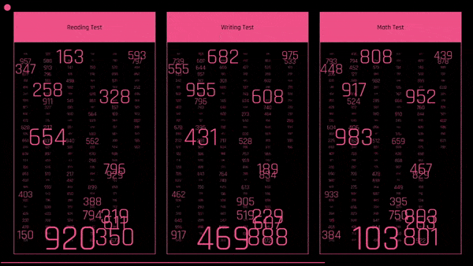
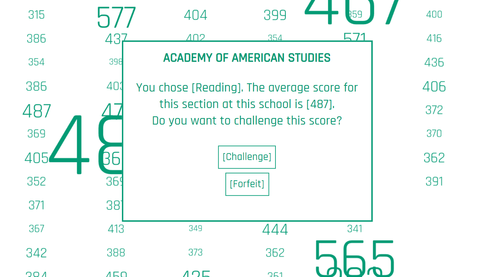
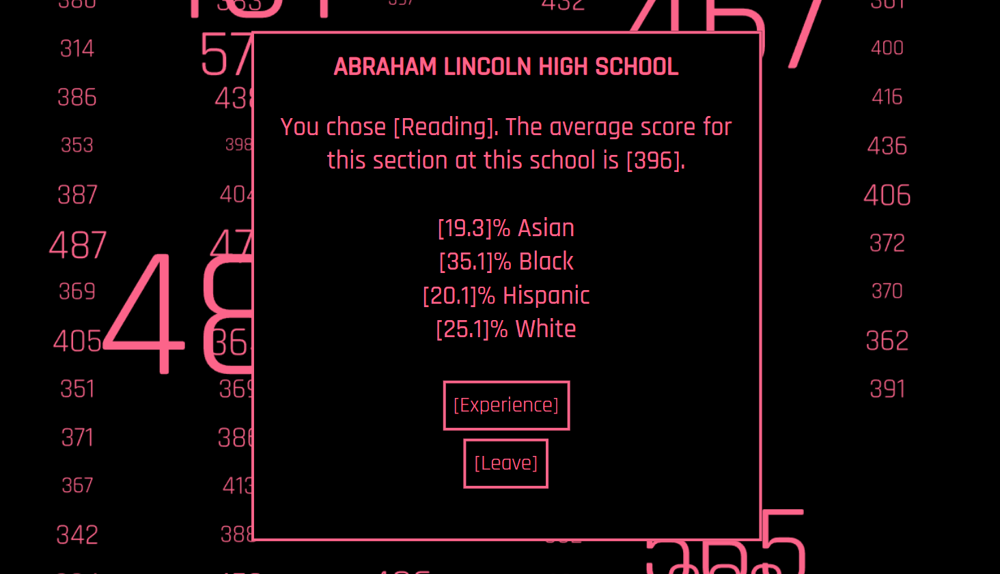
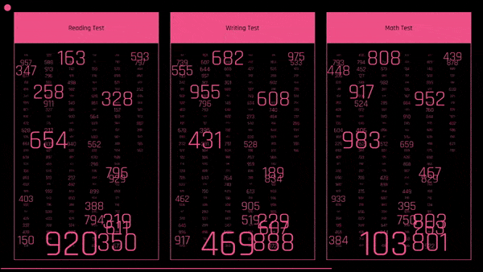
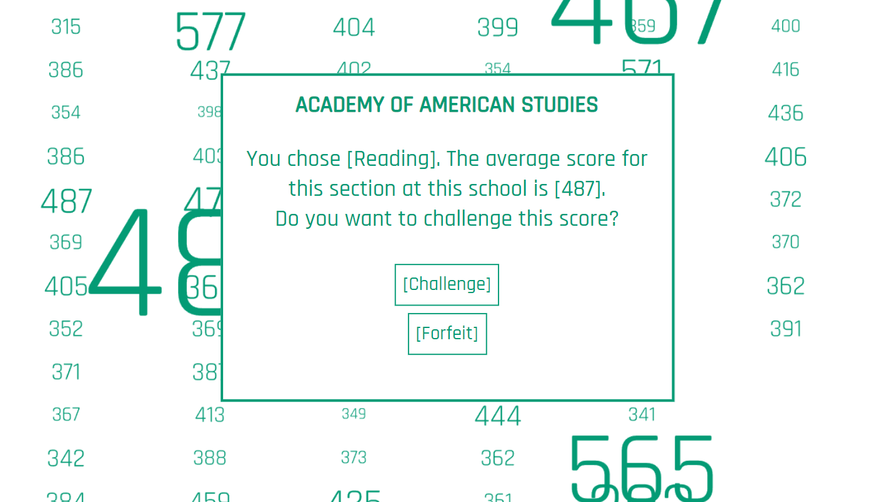
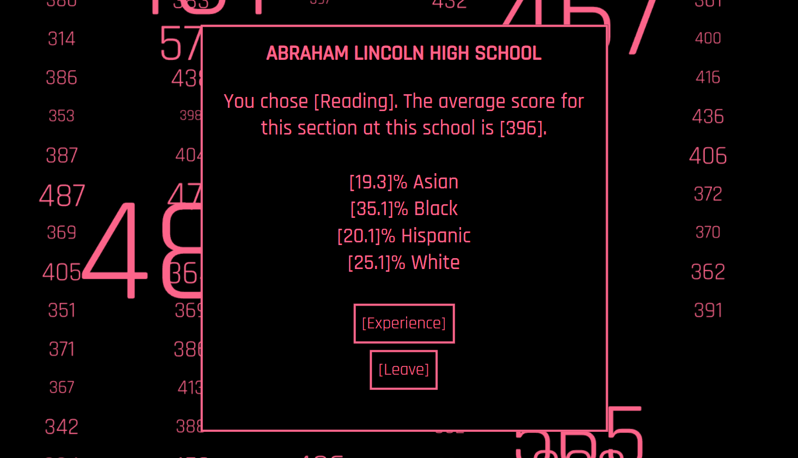

Creating 2D Interfaces & 3D Scenes
The 3D interactive rooms are connected to these 2D pages as they display a different color scheme and level of chaos based on your decisions in each room. These pages have research about how fear, love, and regret all affect our personality. All 3D assets for each of the rooms were created in Blender.
Creating 3D Spaces
 




